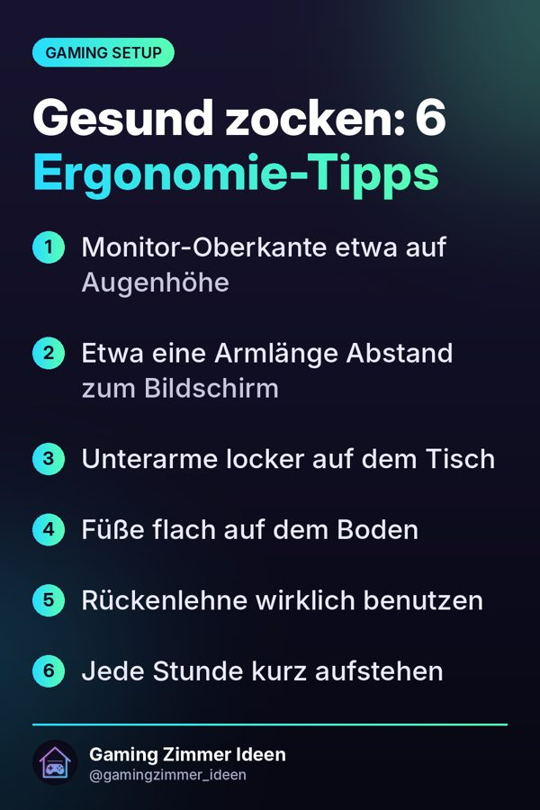

Gesund zocken: 6 Ergonomie-Tipps für lange Gaming-Sessions

Ergonomie beim Gaming: Die Monitor-Oberkante etwa auf Augenhöhe, rund eine Armlänge Abstand zum Bildschirm, Unterarme locker auf dem Tisch, Füße flach auf dem Boden, die Rückenlehne nutzen und jede Stunde kurz aufstehen. So bleibt dein Rücken auch nach langen Sessions entspannt. Jetzt merken!
Auf einen Blick
- Monitor-Oberkante etwa auf Augenhöhe
- Etwa eine Armlänge Abstand zum Bildschirm
- Unterarme locker auf dem Tisch
- Füße flach auf dem Boden
- Rückenlehne wirklich benutzen
- Jede Stunde kurz aufstehen